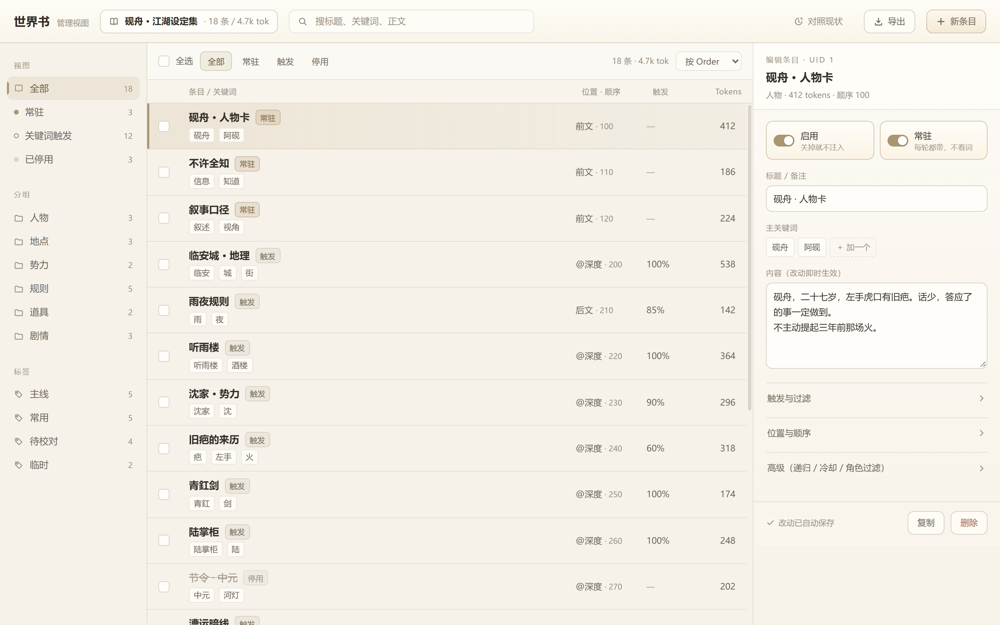

酒馆（SillyTavern / TauriTavern）的一整套米白外观与界面改造，收在一个扩展里。装上它，外观就是这个样子，不用手改 user.css。
上面是结构示意，不是截图。真实效果（半透玻璃、受光面、正文字号、隐藏与一键还原原生）要装进酒馆才看得到。
在酒馆「扩展 → 从 URL 安装」粘贴下面这个地址。手机、别的电脑都一样，复制链接发过去就能用。也可以直接下 zip 手动放进 third-party/。
三栏样式稿：左边目录筛选，中间可多选的紧凑列表，右边常驻编辑器。能点、能搜、能批量操作，是给人看样子用的，还没装进扩展。

manifest.json + index.js + skin.css），docs/ 只放预览页，不会被酒馆当扩展加载。装好后在「扩展设置」里有「还原原生 / 用回扩展顶栏」双向开关，随时能退回酒馆原来的样子，不会卡住回不去。